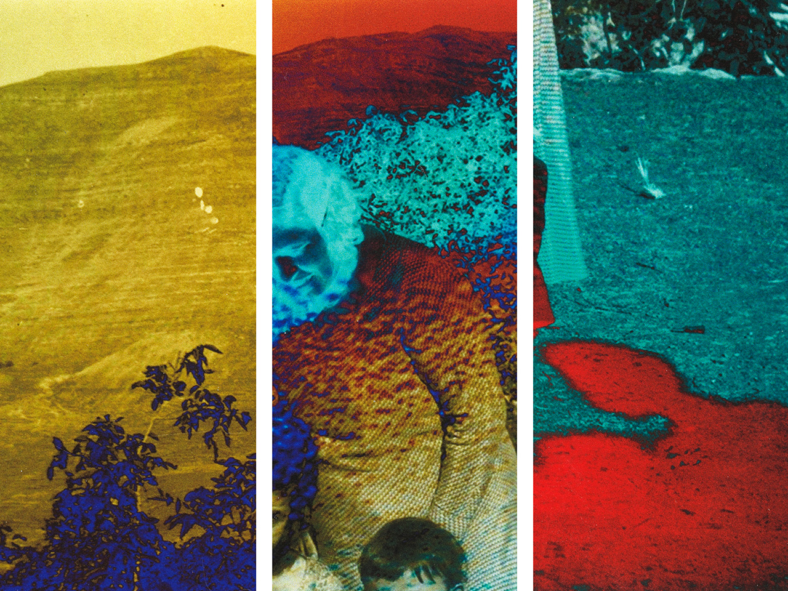

Collage numérique fait d'après une photographie en noir et blanc prise par Marie el-Khazen, sur un négatif en nitrate non daté de la collection de Mohsen Yammine. Avec l'aimable autorisation de la Fondation arabe pour l’image.
Vue d'un tirage numérique de la pièce.
Détail du tirage.
Vue d'une installation de la pièce dans le bâtiment La Cita de l'École Média Art à Chalon-sur-Saône.